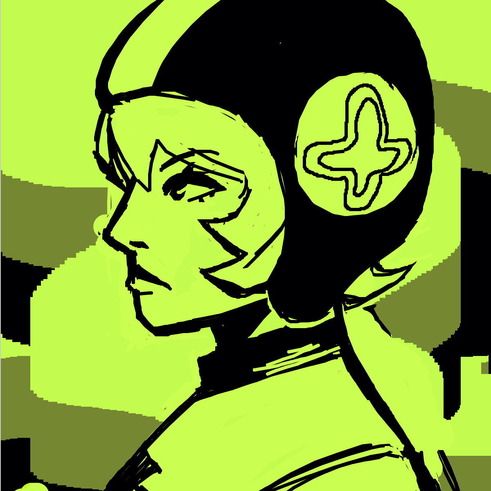

Code:
var img;
var img2;
var img3;
var initials ='df'; // your initials
var choice = '1'; // starting choice, so it is not empty
var screenbg = 200; // off white background
var lastscreenshot=61; // last screenshot never taken
var colorPicker;
function preload() {
img = loadImage('https://drinnief.github.io/palettes/jsr_palette1.png');
img2 = loadImage('https://drinnief.github.io/palettes/jsr_palette2.png');
img3 = loadImage('https://drinnief.github.io/palettes/jsr_palette3.png');
}
function setup() {
createCanvas(600, 600); // canvas size
background(screenbg); //
cursor(CROSS);
colorPicker = createColorPicker("black");
}
function draw() {
if (keyIsPressed) {
choice = key; // set choice to the key that was pressed
clear_print(); // check to see if it is clear screen or save image
}
if (mouseIsPressed){
if(mouseButton==LEFT){
newkeyChoice(choice); // if the mouse is pressed call newkeyChoice
let selectedColor=colorPicker.color();
stroke(colorPicker.value());
}
else if(mouseButton==RIGHT){
stroke(screenbg);
line(mouseX, mouseY, pmouseX, pmouseY);} // ERASER!
}}
function newkeyChoice(toolChoice) { //toolchoice is the key that was pressed
// the key mapping if statements that you can change to do anything you want.
// just make sure each key option has the a stroke or fill and then what type of
// graphic function
if (toolChoice == '1' ) { // first tool - Small Brush
strokeWeight(4);
line(mouseX, mouseY, pmouseX, pmouseY);
} else if (toolChoice == '2')
{ // third tool - Thick Brush
strokeWeight(30);
line(mouseX, mouseY, pmouseX, pmouseY);
} else if (toolChoice == '3') { // second tool - Varied Weight
var weight = dist(mouseX, mouseY, pmouseX, pmouseY);
strokeWeight(weight);
line(mouseX, mouseY, pmouseX, pmouseY);
} else if (toolChoice == '4') { // fourth tool - Eraser
{
strokeWeight(4);
stroke(screenbg);
line(mouseX, mouseY, pmouseX, pmouseY);}
} else if (toolChoice == '5') { // fifth tool - Big Eraser
stroke(screenbg);
strokeWeight(50)
line(mouseX, mouseY, pmouseX, pmouseY);
} else if (toolChoice == '6') { //Transparent Brush
stroke(0,0,0,30);
line(mouseX, mouseY, pmouseX, pmouseY);
} else if (toolChoice == '7') {//Square Brush
rect(mouseX, mouseY, 20, 20);
} else if (toolChoice == '8') { //Giant Circle Brush
strokeWeight(300);
line(mouseX, mouseY, pmouseX, pmouseY);
} else if (toolChoice == '9') {
image(img, mouseX, mouseY, 300, 300);
} else if (toolChoice == '0') {
image(img2, mouseX, mouseY, 300, 300);
} else if (toolChoice == 'g' || toolChoice == 'G') { // g places the image we pre-loaded
image(img3, mouseX, mouseY, 300, 300);
// } else if (toolChoice == 'h' || toolChoice == 'H') { // g places the image we pre-loaded
// image(img2, mouseX-25, mouseY-25, 50, 50,20);
// } else if (toolChoice == 'i' || toolChoice == 'I') { // g places the image we pre-loaded
// image(img3, mouseX-25, mouseY-25, 50, 50,20);
}
}
function testbox(r, g, b) {
// this is a test function that will show you how you can put your own functions into the sketch
x = mouseX;
y = mouseY;
fill(r, g, b);
rect(x-50, y-50, 200, 200);
}
function clear_print() {
// this will do one of two things, x clears the screen by resetting the background
// p calls the routine saveme, which saves a copy of the screen
if (key == 'x' || key == 'X') {
background(screenbg); // set the screen back to the background color
} else if (key == 'p' || key == 'P') {
saveme(); // call saveme which saves an image of the screen
}
}
function saveme(){
//this will save the name as the intials, date, time and a millis counting number.
// it will always be larger in value then the last one.
filename=initials+day() + hour() + minute() +second();
if (second()!=lastscreenshot) { // don't take a screenshot if you just took one
saveCanvas(filename, 'jpg');
key="";
}
lastscreenshot=second(); // set this to the current second so no more than one per second
}